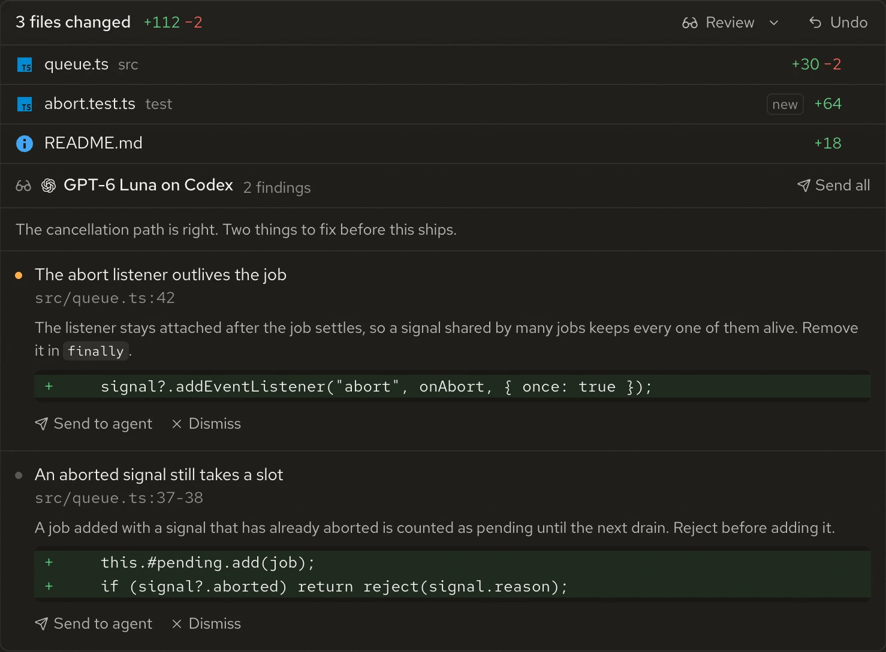
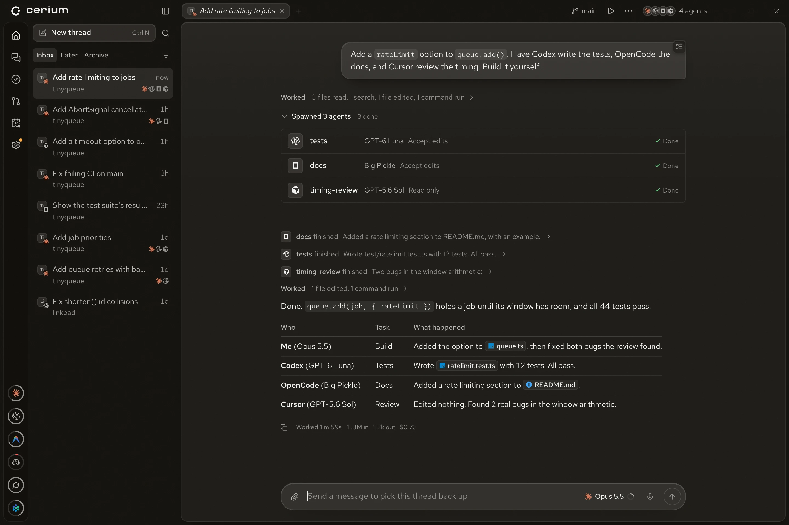
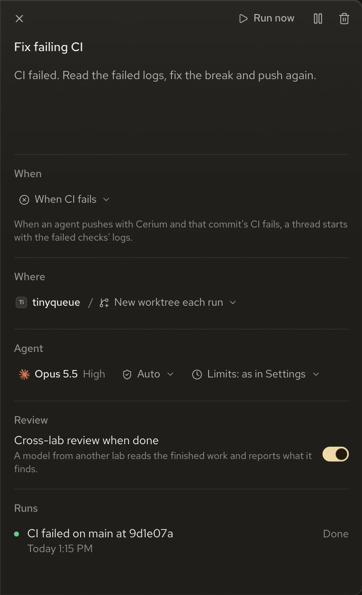
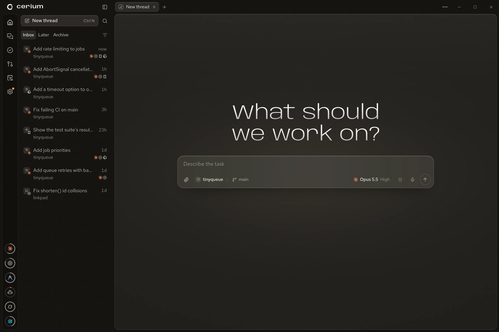

Cross-lab code review
Have Codex audit a patch Claude wrote before you commit. Every finding quotes the exact diff lines so you can send any finding back to the agent in one click.

A local-first desktop app for Claude Code, Codex, Cursor, and six more coding agents, running on the subscriptions you already pay for.
Prompt a lead agent once. It assigns subtasks to any signed-in harness with scoped permissions, while every subagent transcript stays open live.

Install any of these locally and sign in as usual. Cerium detects them automatically, never reads your tokens or API keys, and adds no proxy or markup.
| Harness | Integration | Sign-in |
|---|---|---|
| Claude Code | Claude Agent SDK | claude login |
| Codex | codex app-server |
codex login |
| Cursor | @cursor/sdk |
Cursor browser sign-in |
| OpenCode | opencode serve |
opencode auth login |
| Muse Code | muse serve |
muse login |
| Antigravity | Antigravity CLI (ACP) | agy acp --login |
| GitHub Copilot | Copilot CLI (JSON-RPC) | copilot login |
| Grok Build | Grok Build CLI (ACP) | grok login |
| Devin | Devin CLI (ACP) | devin auth login |
Review diffs across labs, inspect outputs with live controls, and trigger threads from schedules or failing CI.
Have Codex audit a patch Claude wrote before you commit. Every finding quotes the exact diff lines so you can send any finding back to the agent in one click.

Agents render live HTML charts, timelines, and simulators inline. Adjust the controls to test a tradeoff, then send your chosen settings straight back.
RunningJob startUnlimited finish
Trigger threads on a schedule, on GitHub events, or when CI fails. Cerium pulls the failed logs, fixes the break in a fresh git worktree, and pushes again.

/btw, and dictation/btw side questions, work in split panes, and
dictate offline with local Whisper.
Each palette styles the chrome, accent, and syntax colors together. Pick one to preview it on this page.

Cerium runs no agent loop of its own and proxies nothing. It coordinates your local harnesses over an injected MCP bus and writes every event to SQLite.
Free and open source under Apache 2.0.